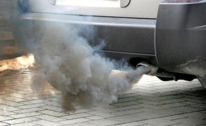
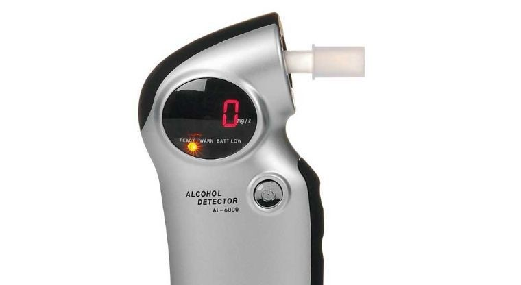
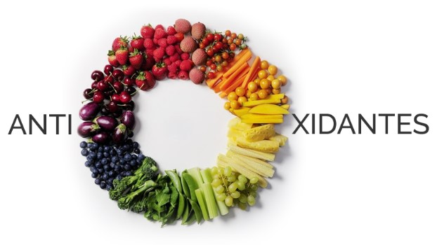
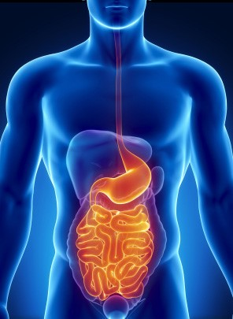
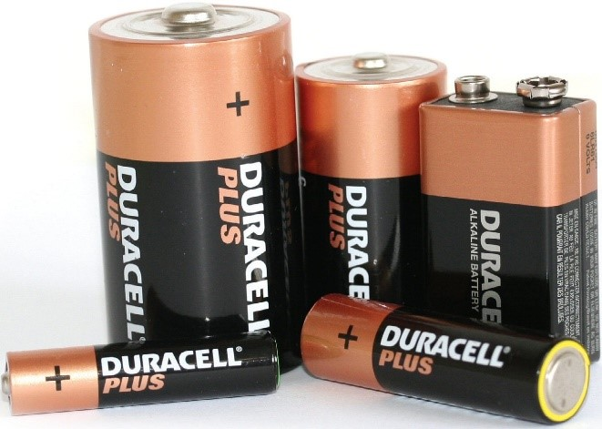
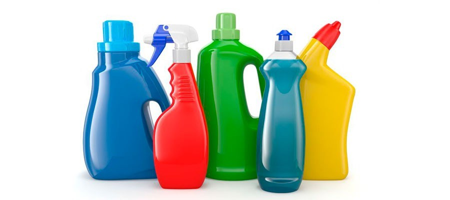

Aplicaciones y ejemplos
|  | La gasolina que utilizamos para dar energía a los carros utiliza un proceso de oxidación reducción para convertir la gasolina en energía. El proceso reduce el óxido de nitrógeno y oxígeno, oxida el monóxido de carbono en dióxido de carbono y oxida los hidrocarburos en dióxido de carbono y agua. |
| El sistema de calefacción de los hogares utiliza otra forma de reacciones redox para calentar la casa. En este proceso reduce los hidrocarburos y el oxígeno en dióxido de carbono inflamable y agua. Genera energía en forma de calor para calentar el hogar. |
| En el metabolismo de todos los seres vivos, se producen las reacciones de óxido-reducción, ya que están involucrados en la cadena de reacciones químicas de la fotosíntesis y la respiración aeróbica. En ambas reacciones existe una cadena transportadora de electrones formada por una serie de complejos enzimáticos, entre los que destacan los citocromos, durante su viaje, los electrones van liberando energía que se aprovecha para sintetizar enlaces de alta energía en forma de ATP. |
|  | Labor policial, ya que una reacción de este tipo, entre el ión dicromato y el alcohol etílico, es la que permite determinar con gran precisión el grado de alcoholemia de conductores. |
|  | Para evitar la oxidación y reducción de los compuestos presentes en los mismos, utilizan sustancias llamadas antioxidantes (un tipo de conservador). La función de éstas es evitar la alteración de las cualidades originales de los alimentos. Mediante las sustancias antioxidantes, diversos alimentos susceptibles a la oxidación, alargan su vida útil. |
| En las industrias de cosméticos, productos de higiene y perfumes, las cuales están constituidas por sustancias naturales o sintéticas, de uso externos en las diversas partes del cuerpo humano, piel, sistema capilar, uñas, entre otros. Ocurren procesos de oxidación o de reducción llevando a alteraciones de la actividad de las sustancias activas, de las características organolépticas y físicas de la formulación. |

|
| La digestión de los alimentos es un proceso de oxidación. Las moléculas de los alimentos reaccionan con el oxígeno del cuerpo para formar dióxido de carbono y agua. La energía también se libera en el proceso. El dióxido de carbono y el agua son eliminados del cuerpo como productos de desecho, pero la energía se utiliza para hacer posibles todas las reacciones químicas que mantienen vivo un organismo y lo ayudan a crecer |  |
|  | Las baterías utilizan reacciones electrodo químicas o redox para convertir la energía química en energía eléctrica. Las reacciones redox espontáneas ocurren en las células galvánicas, mientras que las reacciones químicas no espontáneas tienen lugar en las células electrolíticas. |
| Jabones y detergentes limpios por medio de reacciones químicas. El jabón emulsiona la suciedad, lo que significa que las manchas de grasa se unen al jabón para que se puedan quitar con agua. Los detergentes actúan como surfactantes, disminuyendo la tensión superficial del agua para que pueda interactuar con los aceites, aislarlos y enjuagarlos. |  |